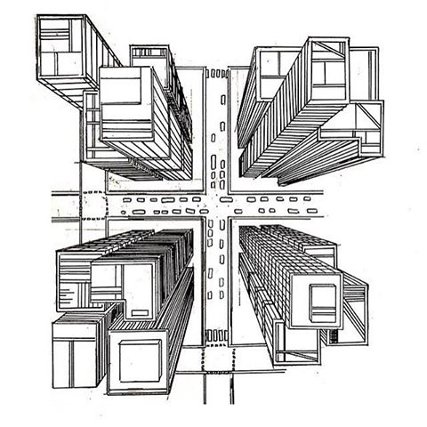
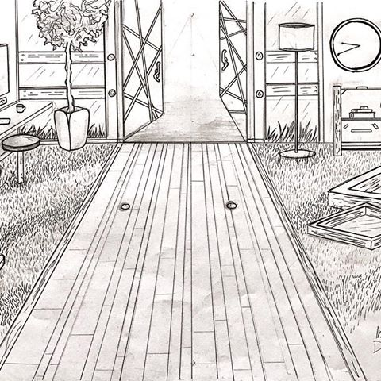

One Perspective Drawing Tutorial
TheVirtualInstructor.com explains One Point Perspective much better than me
They describe it as "One point perspective is a type of linear perspective. Linear perspective relies on the use of lines to render objects leading to the illusion of space and form in a flat work of art. It is a structured approach to drawing. One point perspective gets its name from the fact that it utilizes a single vanishing point."
The drawings below are done by me with the same technique used on the website.
 